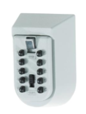

Oppgavesamling i R1
Innhold
Sannsynlighetsregning
Laderne eksamen v18 del1
En butikk kjøper samme type ladere fra to leverandører. Av disse kommer
- 40 % fra leverandør A
- 60 % fra leverandør B
Det viser seg at
- 3 % av laderne fra A er defekte
- 2 % av laderne fra B er defekte
Vi tenker oss at vi velger ut en lader tilfeldig.
- a
- Bestem sannsynligheten for at laderen kommer fra leverandør A og er defekt.
- b
- Bestem sannsynligheten for at en lader som er defekt, kommer fra leverandør A.
Flyselskapet eksamen v18 del2
Et flyselskap har en flyrute mellom Oslo og Bergen. Flyene som brukes har plass til 116 passasjerer. Sannsynligheten for at en passasjer som har kjøpt billett, ikke møter til flyavgang er 6 %.
Vi lar X være antall passasjerer som møter til en tilfeldig valgt flyavgang.
- a
- Hva må vi forutsette for å kunne bruke en binomisk sannsynlighetsmodell i denne situasjonen?
I resten av oppgaven går vi ut fra at X er binomisk fordelt.
- b
- Til en flyavgang er det solgt 122 billetter. Bestem sannsynligheten for at alle som møter, får plass på flyet.
Flyselskapet ønsker at sannsynligheten skal være minst 95 % for at alle som møter, skal få plass på flyet.
- c
- Hvor mange billetter kan flyselskapet maksimalt selge da?
Nøkkelboksene eksamen h17 del1
En nøkkelboks er en boks med plass til nøkler. Noen slike bokser har kodelås.
For én type nøkkelboks lages en kode ved å stille inn fire tal. Hvert tall velges blant tallene 0 til 9. Et tall kan velges flere ganger. Tallene må være stilt i en bestemt rekkefølge.
- a
- Hvor mange ulike koder finnes det for denne typen nøkkelboks?
For en annen type nøkkelboks lages en kode ved å belge et bestemt antall forskjellige tall blant tallene 0 til 9. Tallene trenger ikke å være stilt inn i en bestemt rekkefølge.

- b
- Hvor mange ulike koder finnes det for denne typen nøkkelboks dersom koden skal bestå av fire forskjellige tall?
- c
- Hvor mange tall må koden bestå av for at antallet mulige koder skal bli størst mulig? Hvor mange mulige koder er det da?
Spillelista eksamen h17 del2
Jakob har en spilleliste med 20 sanger på mobilen sin. Fire av sangene på spillelisten er med artisten Kygo. Programmet spiller av sangene i tilfeldig rekkefølge (shuffle) med tilbakelegging. Det vil si at samme sang kan bli spilt av flere ganger etter hverandre.
- a
- Forklar at sannsynligheten alltid er \(p = 0,2\) for at neste sang som blir spilt, er med Kygo.
- b
- Jakob vil høre på fem avspillinger fra spillelisten. Bestem sannsynligheten for at nøyaktig to av sangene han spiller, er med Kygo.
- c
- Hvor mange avspillinger må han høre på for at sannsynligheten for å høre minst én sang med Kygo skal være større enn 90 %?
Nøklene eksamen h16 del1
I en fabrikk er det to maskiner, maskin A og maskin B, som produserer samme type nøkler.
- 4 % av nøklene fra maskin A er defekte.
- 1 % av nøklene fra maskin B er defekte.
- Maskin B produserer dobbelt så mange nøkler som maskin A.
En nøkkel blir valgt tilfeldig fra lageret.
- a
- Bestem sannsynligheten for at nøkkelen er defekt.
Det viser seg at den valgte nøkkelen er defekt.
- b
- Bestem sannsynligheten for at nøkkelen ble produsert av maskin A.
Lottospillet eksamen h16 del2
I pengespillet Lotto legges 34 kuler i en beholder. Hver kule er nummerert med ett av tallene fra 1 til 34. Sju kuler trekkes tilfeldig uten tilbakelegging. Tallene på de sju kulene er vinnertallene.
Når du spiller Lotto, krysser du av sju av tallene fra 1 til 34 på en kupong.
- a
- Hvor mange måter kan du velge ut sju av de 34 tallene?
Tore har levert inn en lottokupong der han har krysset av tallene. \[3, 5, 11, 18, 21, 25, 32\]
- b
- Bestem sannsynligheten for at Tore får nøyaktig 5 rette.
Tore ser lottotrekningen på TV. etter at det er trukket ut fire tall, går strømmen, og TV-en går i svart. Tallene som til da er trukket ut, er 5, 21, 3, og 11.
- c
- Bestem sannsynligheten for at Tore får sju rette på lottokupongen sin.